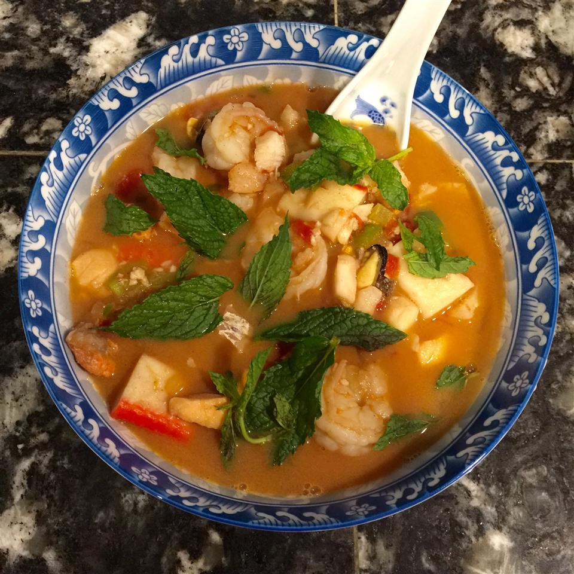

Back
Spicy Fish Soup

A delicious fish soup that's low in fat! Spicy taste but can adjust to your taste.
Ingredients (2 servings)
- 1/4 onion, chopped
- 1/2 clove garlic, minced
- 1/2 tablespoon chili powder
- 3/4 cup chicken broth
- 1/2 (4 ounce) can canned green chile peppers, chopped
- 1/2 teaspoon ground cumin
- 3/4 cup canned peeled and diced tomatoes
- 1/4 cup chopped green bell pepper
- 1/4 cup shrimp
- 1/4 pound cod fillets
- 1/3 cup and 1/2 tablespoon and 1/2 teaspoon plain nonfat yogurt
Directions
- 1. Spray a large saucepan with the vegetable cooking spray over medium high heat. Add the onions and saute, stirring often, for about 5 minutes. Add the garlic and chili powder and saute for 2 more minutes.
- 2. Then add the chicken broth, chile peppers and cumin, stirring well. Bring to a boil, reduce heat to low, cover and simmer for 20 minutes.
- 3. Next, add the tomatoes, green bell pepper, shrimp and cod. Return to a boil, then reduce heat to low, cover and simmer for another 5 minutes. Gradually stir in the yogurt until heated through.
Nutritions per servings
- 146 calories
- protein 19.3g
- carbohydrates 12.2g
- fat 1.7g
- cholesterol 45.7mg
- sodium 873.8mg